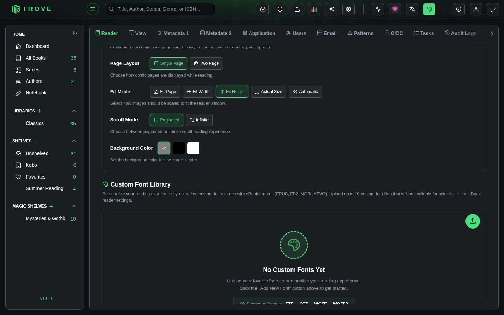
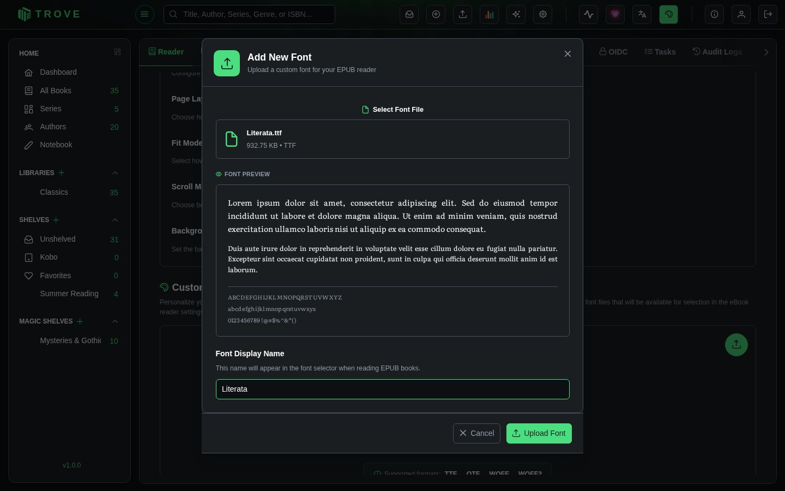
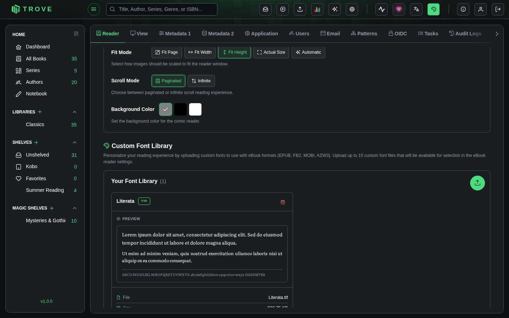
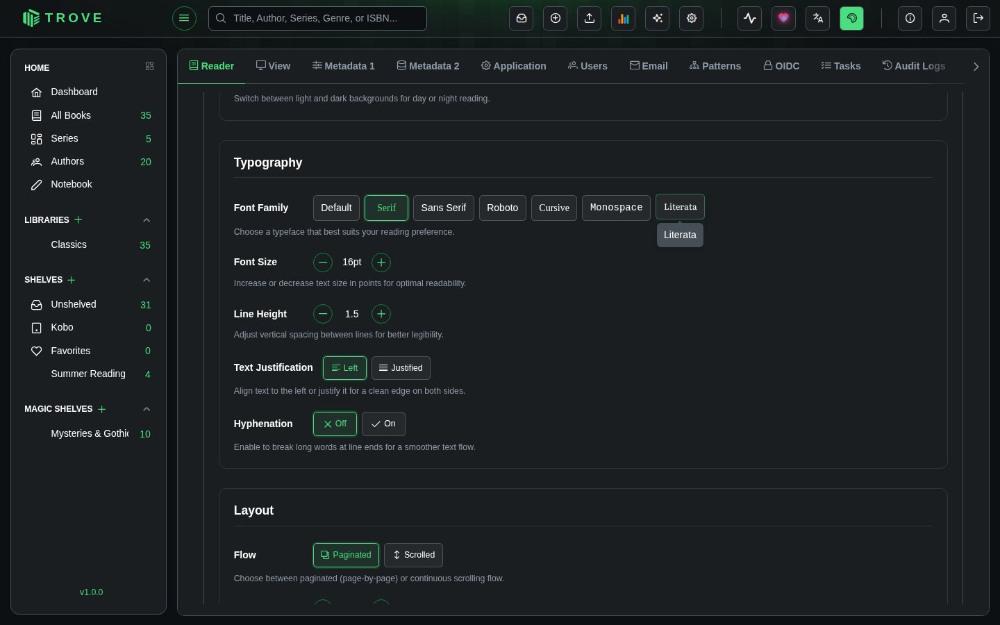
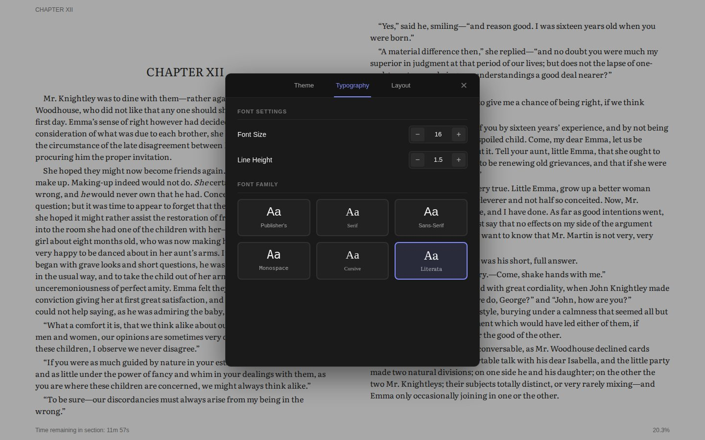

Custom fonts
Upload your favourite typefaces and read in them. Your fonts appear in the eBook reader's font choices, for EPUB, MOBI, AZW3 and FB2 books.
Uploading a font
- Go to Settings › Reader and scroll to Custom Font Library.

- Click the round upload button (Add New Font) to open the upload dialog.
- Drop a font file onto the dialog, or click it to choose one. Trove shows a preview.
- Check the Font Display Name, the name you'll pick it by in the reader, and click Upload Font.

Your fonts are listed with a preview, the file's name and size, and when it was uploaded. The bin button deletes one.

| Formats | TTF, OTF, WOFF, WOFF2 |
| Size | Up to 5 MB per file |
| How many | Up to 10 fonts per user |
| Who sees them | Only you: each user has their own font library |
| Permission | Manage Fonts |
Reading in your font
For every book
In Settings › Reader, under eBook Reader: Default Settings › Typography, your fonts sit alongside the built-in choices. Pick one to make it your default. (With Default Override in Reader preferences it applies to every book; with Book-Specific, to books you haven't changed yourself.)

For one book
While reading, open Settings, then More Settings › Typography, and pick your font under Font Family. The page changes straight away.

Where to find fonts
Fonts under the SIL Open Font License are free to use and share. Good places to look:
- Google Fonts: try Literata, Merriweather, EB Garamond or Source Serif for reading
- Font Squirrel
- Fonts made for readability, such as Atkinson Hyperlegible or OpenDyslexic
Only upload fonts you're allowed to use. Fonts that came with your computer or from a shop often may not be copied to other devices.
Troubleshooting
| Problem | What to check |
|---|---|
| "File size exceeds maximum allowed" | The file is over 5 MB. Use the WOFF2 version, or a single weight rather than a whole family. |
| "Maximum fonts quota exceeded" | You have 10 fonts. Delete one first. |
| The font isn't in the reader | Reopen the book. Fonts work in the eBook reader only, not the PDF or comic readers or on Kobo and KOReader devices. |
| Letters are missing or look wrong | The font may not cover the book's language (accents, Cyrillic, CJK). Choose a font with wider coverage. |
Deleting a font you're using in a book makes that book fall back to its default font.